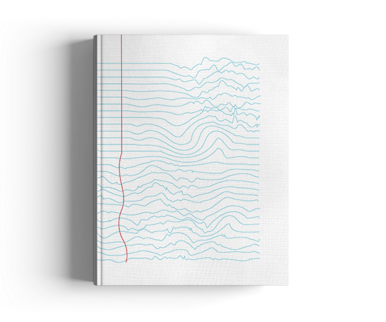
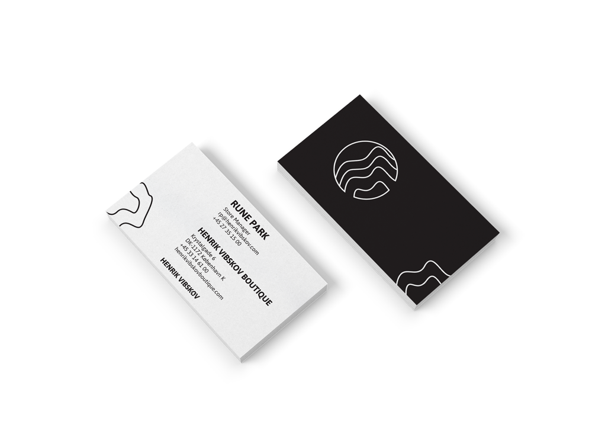
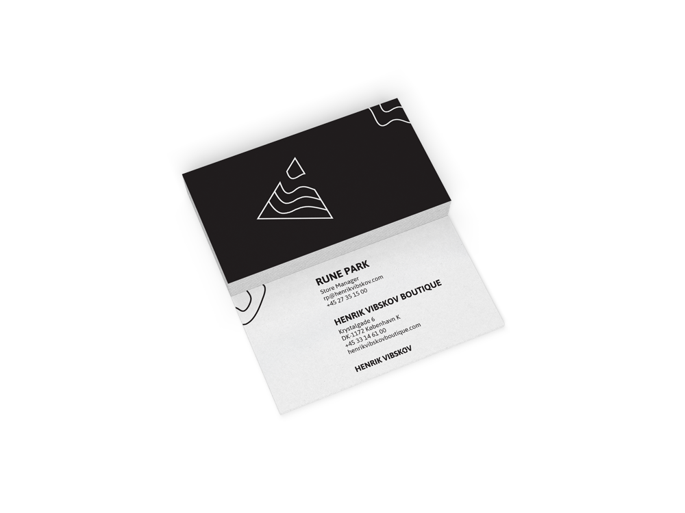
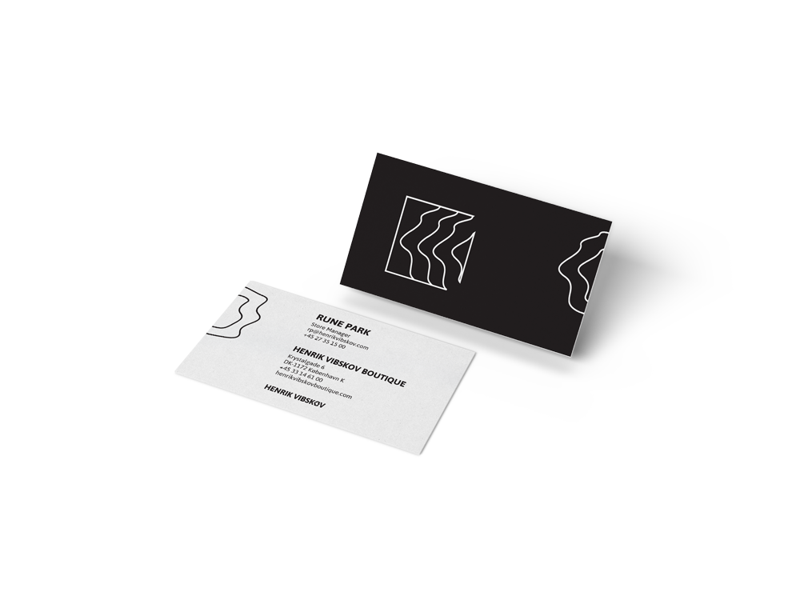
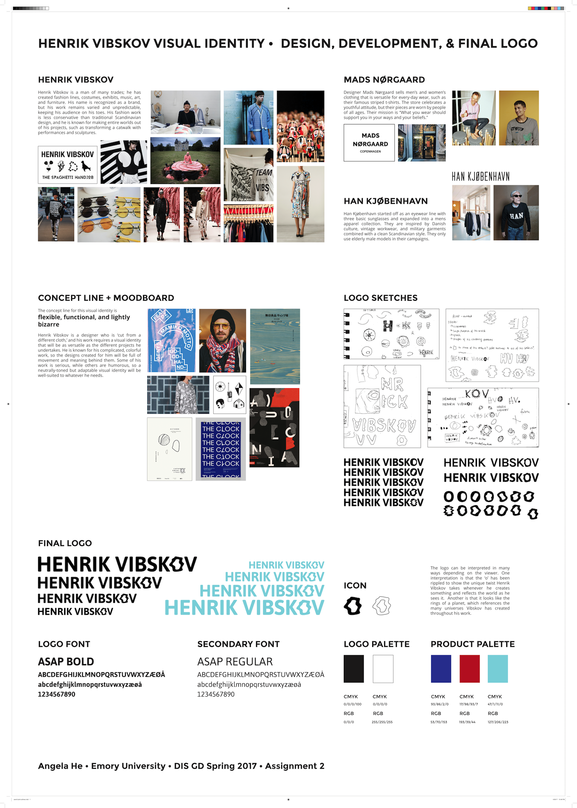
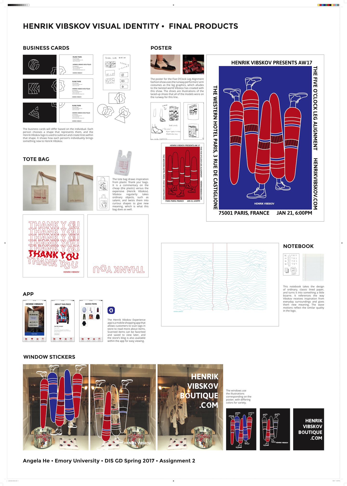

|
Henrik Vibskov Visual identity for an eccentric Danish fashion designer 
Henrik Vibskov is best known as Denmark's most reknowned fashion designer. We met with Vibskov for my graphic design course in Copenhagen, and I created a visual identity for his brand, which encompasses fashion lines, exhibits, music, and art.  Vibskov is famous for transforming his designs into entire universes of stories and eccentricities. The ripple logo reflects the unexpected twist he has on whatever he touches and references the universes he creates by symbolizing the rings of a planet. 

The posters for the AW17 fashion line use the runway costumes and models' shoes as graphic inspiration. The notebook reflects Vibskov's technique of transforming ordinary objects, in this case college-lined paper, into the extraordinary and peculiar. 


The individualized business cards allow each employee to choose a shape that represents them, and the Henrik Vibskov logo subtracts and cuts lines into that shape to reflect each person's individuality that brings something new to the brand. 
The tote bag draws inspiration from plastic 'Thank You' bags. It is a commentary on how Vibskov uses the cheap (plastic bags) to create the high-end (Henrik Vibskov). Process Sheets   |
is a product designer with experience in UX/UI, front-end, and graphic design. Her passions lie in emerging tech + design for social impact and delight.
Currently a product design fellow at The Atlantic.
Read more..